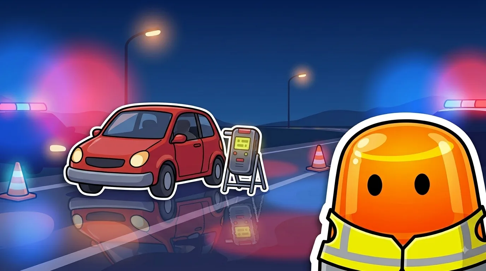
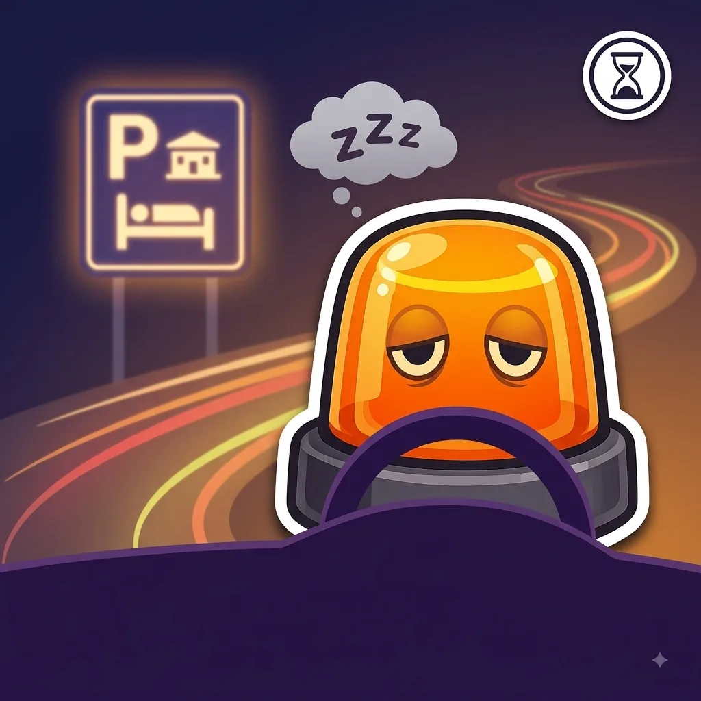

Esto es el repaso. Para aprobar a la primera, hace falta algo más.
Tests oficiales, modo examen cronometrado y tu progreso guardado.

Tasas máximas y por qué te la juegas más de lo que crees.
Infracción administrativa (delito si la tasa es muy alta)
Delito siempre, aunque no hayas bebido
| Dar positivo en alcohol o drogas | Negarte a la prueba | |
|---|---|---|
| ¿Qué es? | Infracción muy grave (delito si la tasa es muy alta) | Delito penal, sin excepciones |
| Multa | 500€-1.000€ y retirada de puntos | Sin multa administrativa: pena de prisión |
| Carnet | Retirada de 4 a 6 puntos | Pérdida del permiso de 1 a 4 años |
No hay "una cañita" segura.
El alcohol afecta a los reflejos desde la primera copa, aunque no llegues a superar la tasa máxima.
Con drogas, cero es cero.
A diferencia del alcohol, no existe una tasa mínima permitida: cualquier resto detectado en saliva ya es infracción.
2 horas o 200 km, lo que llegue antes.
Es la recomendación oficial para parar a descansar, aunque todavía no notes sueño.

La forma y el color ya te dicen el mensaje antes de leer nada.
A más velocidad, la frenada crece mucho más rápido que la reacción.
Líneas, flechas y símbolos pintados en el asfalto, con su propio código.
Las reglas base que deciden por ti cuando no hay ninguna señal.
Cuándo, cómo y dónde se puede adelantar con seguridad.
Quién pasa primero en cruces y glorietas.
Incorporaciones, carriles y normas específicas de vías rápidas.
Lo mínimo que debes revisar antes de coger el coche.
Proteger, avisar y socorrer, en ese orden.
Cómo funciona el sistema de puntos y qué te los quita.
Las situaciones que no siguen la norma "de manual".
Tests oficiales, modo examen cronometrado y tu progreso guardado.